File: 000000.gt.txt (if the image is defective, simply delete all Arabic text and the line will be excluded)

حتى أفضت بها الحال إلى كل قلة وذلة، وتكشفت عن فقر مدقع. وقد كان
File: 000001.gt.txt (if the image is defective, simply delete all Arabic text and the line will be excluded)
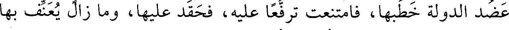
عضد الدولة خطبها، فامتنعت ترفعا عليه، فحقد عليها، وما زال يعنف بها
File: 000002.gt.txt (if the image is defective, simply delete all Arabic text and the line will be excluded)

حتى عراها وهتكها، ثم ألزمها أن تختلف إلى دار القحاب فتتكسب ما
File: 000003.gt.txt (if the image is defective, simply delete all Arabic text and the line will be excluded)
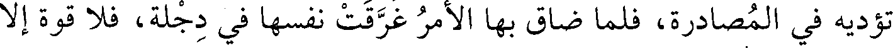
تؤديه في المصادرة، فلما ضاق بها الأمر غرقت نفسها في دجلة، فلا قوة إلا
File: 000004.gt.txt (if the image is defective, simply delete all Arabic text and the line will be excluded)

سنة سبع وستين وثلاث مائة
File: 000005.gt.txt (if the image is defective, simply delete all Arabic text and the line will be excluded)

بالله.
File: 000006.gt.txt (if the image is defective, simply delete all Arabic text and the line will be excluded)

فيها جاء الخبر بهلاك أبي يعقوب يوسف بن الحسن الجنابي القرمطي
File: 000007.gt.txt (if the image is defective, simply delete all Arabic text and the line will be excluded)

صاحب هجر، فأغلقت أسواق الكوفة له ثلاثة أيام، وكان موازرا لعضد
File: 000008.gt.txt (if the image is defective, simply delete all Arabic text and the line will be excluded)

الدولة.
File: 000009.gt.txt (if the image is defective, simply delete all Arabic text and the line will be excluded)

وفيها عبر عز الدولة إلى الجانب الغربي على جسر عمله ورحل إلى
File: 000010.gt.txt (if the image is defective, simply delete all Arabic text and the line will be excluded)

قطربل، وتفرق عنه الديلم، ودخل أوائل أصحاب عضد الدولة بغداد،
File: 000011.gt.txt (if the image is defective, simply delete all Arabic text and the line will be excluded)

وخرج الطائع يتلقاه، وضربت له القباب المزينة، ودخل البلد. ثم إنه خرج
File: 000012.gt.txt (if the image is defective, simply delete all Arabic text and the line will be excluded)

لقتال عز الدولة، فالتقوا، فأخذ عز الدولة أسيرا، وقتله بعد ذلك.
File: 000013.gt.txt (if the image is defective, simply delete all Arabic text and the line will be excluded)

وخلع الطائع على عضد الدولة خلع السلطنة وتوجه بتاج مجوهر،
File: 000014.gt.txt (if the image is defective, simply delete all Arabic text and the line will be excluded)
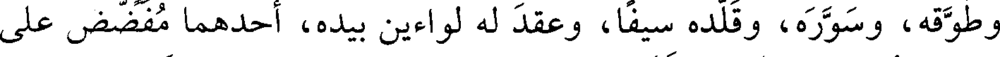
وطوقه، وسوره، وقلده سيفا، وعقد له لواءين بيده، أحدهما مفضض على
File: 000015.gt.txt (if the image is defective, simply delete all Arabic text and the line will be excluded)
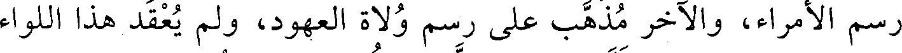
رسم الأمراء، والآخر مذهب على رسم ولاة العهود، ولم يعقد هذا اللواء
File: 000016.gt.txt (if the image is defective, simply delete all Arabic text and the line will be excluded)

الثاني لغيرة قبله، ولقبه تاج الملة، وكتب له عهد بحضرته وقرىء
File: 000017.gt.txt (if the image is defective, simply delete all Arabic text and the line will be excluded)

بحضرته، ولم تجر العادة بذلك، إنما كان يدفع العهد إلى الولاة بحضرة
File: 000018.gt.txt (if the image is defective, simply delete all Arabic text and the line will be excluded)

أمير المؤمنين، فإذا أخذه قال أمير المؤمنين : هذا عهدي إليك فاعمل به،
File: 000019.gt.txt (if the image is defective, simply delete all Arabic text and the line will be excluded)

وبعث إليه الطائع هدايا كثيرة، فبعث هو إلى الطائع تقادم من جملتها
File: 000020.gt.txt (if the image is defective, simply delete all Arabic text and the line will be excluded)

خمسون ألف دينار وألف ألف درهم، وخيل، وبغال، ومسك، وعنبر.
File: 000021.gt.txt (if the image is defective, simply delete all Arabic text and the line will be excluded)

وفيها زادت دجلة ببغداد حتى بلغت إحدى وعشرين ذراعا، وكادت
File: 000022.gt.txt (if the image is defective, simply delete all Arabic text and the line will be excluded)

بغداد تغرق، وغرقت أماكن.
File: 000023.gt.txt (if the image is defective, simply delete all Arabic text and the line will be excluded)

وفي ذي القعدة زلزلت سيراف، وسقطت البيوت، وهلك أكثر من
File: 000024.gt.txt (if the image is defective, simply delete all Arabic text and the line will be excluded)

مئتي إنسان تحتها.
File: 000025.gt.txt (if the image is defective, simply delete all Arabic text and the line will be excluded)

قال أبو محمد الكتاني(1) : تكلموا فيه، وتوفي في ربيع الآخر(2) .
File: 000026.gt.txt (if the image is defective, simply delete all Arabic text and the line will be excluded)

58 - محمد بن هانىء، أبو القاسم وأبو الحسن الأزدي
File: 000027.gt.txt (if the image is defective, simply delete all Arabic text and the line will be excluded)

الأندلسي.
File: 000028.gt.txt (if the image is defective, simply delete all Arabic text and the line will be excluded)

قيل : إنه من ذرية المهلب بن أبي صفرة.
File: 000029.gt.txt (if the image is defective, simply delete all Arabic text and the line will be excluded)

كان أبوه شاعرا أديبا، وأما هو فحامل لواء الشعر بالأندلس، ولد
File: 000030.gt.txt (if the image is defective, simply delete all Arabic text and the line will be excluded)
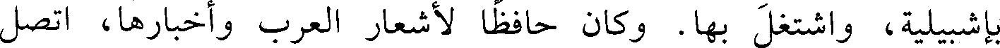
بأشبيلية، واشتغل بها. وكان حافظا لأشعار العرب وأخبارها، اتصل
File: 000031.gt.txt (if the image is defective, simply delete all Arabic text and the line will be excluded)

بصاحب إشبيلية وحظي عنده، فمن شعره :
File: 000032.gt.txt (if the image is defective, simply delete all Arabic text and the line will be excluded)

ولمـا التقـت ألحـاظنـا ووشـاتنـا وأعلن شوق الوشي ما الوشي كاتم
File: 000033.gt.txt (if the image is defective, simply delete all Arabic text and the line will be excluded)

تنفـس أنسـي مـن الخـدر نـاشـر فأسعد وحشي من السدر باغم
File: 000034.gt.txt (if the image is defective, simply delete all Arabic text and the line will be excluded)

وقلن :
File: 000035.gt.txt (if the image is defective, simply delete all Arabic text and the line will be excluded)

عشيـة لا آوي إلـى غيـر سـاجـع ببينـك حتـى كـل شـيء حمـائـم
File: 000036.gt.txt (if the image is defective, simply delete all Arabic text and the line will be excluded)

قطــا ســار سمعــت حفيفــه فقلت : قلوب العاشقين الحوائم
File: 000037.gt.txt (if the image is defective, simply delete all Arabic text and the line will be excluded)

وكان منهمكا في اللذات والمحرمات، متهما بدين الفلاسفة. ولقد
File: 000038.gt.txt (if the image is defective, simply delete all Arabic text and the line will be excluded)
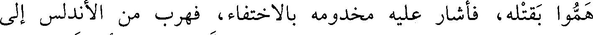
هموا بقتله، فأشار عليه مخدومه بالاختفاء، فهرب من الأندلس إلى
File: 000039.gt.txt (if the image is defective, simply delete all Arabic text and the line will be excluded)

المغرب، واجتمع بالقائد جوهر فامتدحه، ثم اتصل بالمعز أبي تميم الذي
File: 000040.gt.txt (if the image is defective, simply delete all Arabic text and the line will be excluded)

بنى القاهرة، فامتدحه، فوصله، وأنعم عليه، ثم إنه شرب عند أناس
File: 000041.gt.txt (if the image is defective, simply delete all Arabic text and the line will be excluded)

وأصبح مخنوقا.
File: 000042.gt.txt (if the image is defective, simply delete all Arabic text and the line will be excluded)
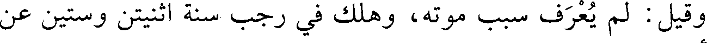
وقيل : لم يعرف سبب موته، وهلك في رجب سنة اثنتين وستين عن
File: 000043.gt.txt (if the image is defective, simply delete all Arabic text and the line will be excluded)

نيف وأربعين سنة.
File: 000044.gt.txt (if the image is defective, simply delete all Arabic text and the line will be excluded)

وله «ديوان» كبير في المدح، وقد يفضي به المديح إلى الكفر، وليس
File: 000045.gt.txt (if the image is defective, simply delete all Arabic text and the line will be excluded)

يلحقه أحد في الشعر من أهل الأندلس، وهو نظير المتنبي(3) .
File: 000046.gt.txt (if the image is defective, simply delete all Arabic text and the line will be excluded)

59 - منصور بن محمد البغدادي المقرىء الحذاء.
File: 000047.gt.txt (if the image is defective, simply delete all Arabic text and the line will be excluded)

حدث عن البغوي، وابن أبي داود.
File: 000048.gt.txt (if the image is defective, simply delete all Arabic text and the line will be excluded)

روى عن البغوي، وابن صاعد. وعنه أبو نعيم الحافظ، وورخه هكذا
File: 000049.gt.txt (if the image is defective, simply delete all Arabic text and the line will be excluded)

في «تاريخ أصبهان»(1) . وقال في معجمه: قدم علينا أصبهان سنة خمس
File: 000050.gt.txt (if the image is defective, simply delete all Arabic text and the line will be excluded)

وستين، فيحرر هذا.
File: 000051.gt.txt (if the image is defective, simply delete all Arabic text and the line will be excluded)

31 - أحمد بن محمد بن عمارة بن أحمد، أبو الحارث الليثي
File: 000052.gt.txt (if the image is defective, simply delete all Arabic text and the line will be excluded)

الكناني، مولاهم، الدمشقي.
File: 000053.gt.txt (if the image is defective, simply delete all Arabic text and the line will be excluded)

سمع أحمد بن محمد بن يحيى بن حمزة، وزكريا السجزي، ومحمد
File: 000054.gt.txt (if the image is defective, simply delete all Arabic text and the line will be excluded)

بن يزيد بن عبد الصمد، وأحمد بن إبراهيم البسري، وإبراهيم بن دحيم،
File: 000055.gt.txt (if the image is defective, simply delete all Arabic text and the line will be excluded)

وجماعة. وعنه ابن جميع(2) ، وتمام، وعبدالرحمن بن أبي نصر، وأحمد
File: 000056.gt.txt (if the image is defective, simply delete all Arabic text and the line will be excluded)

بن محمد بن الحاج الإشبيلي، عبدالوهاب الميداني.
File: 000057.gt.txt (if the image is defective, simply delete all Arabic text and the line will be excluded)

وتوفي في ربيع الآخر في عشر التسعين(3) .
File: 000058.gt.txt (if the image is defective, simply delete all Arabic text and the line will be excluded)

32 - إبراهيم بنعبيد الله المعافري الإشبيلي.
File: 000059.gt.txt (if the image is defective, simply delete all Arabic text and the line will be excluded)

سمع من: أحمد بن خالد، ومحمد بن فطيس. وكان محدثا لغويا
File: 000060.gt.txt (if the image is defective, simply delete all Arabic text and the line will be excluded)

بصيرا بالشعر ؛ قاله ابن الفرضي (4) .
File: 000061.gt.txt (if the image is defective, simply delete all Arabic text and the line will be excluded)

33 - إبراهيم بن محمد بن يحيى بن سختويه النيسابوري، الشيخ
File: 000062.gt.txt (if the image is defective, simply delete all Arabic text and the line will be excluded)

أبو إسحاق المزكي.
File: 000063.gt.txt (if the image is defective, simply delete all Arabic text and the line will be excluded)

قال الحاكم: هو شيخ نيسابور في عصره، وكان من العباد المجتهدين
File: 000064.gt.txt (if the image is defective, simply delete all Arabic text and the line will be excluded)

الحجاجين المنفقين على العلماء والفقراء. سمع ابن خزيمة، وأبا العباس
File: 000065.gt.txt (if the image is defective, simply delete all Arabic text and the line will be excluded)

السراج، وأحمد بن محمد الماسرجسي، وأبا العباس الأزهري،
File: 000066.gt.txt (if the image is defective, simply delete all Arabic text and the line will be excluded)

وعبدالرحمن بن أبي حاتم الرازي، ومحمد بن هارون الحضرمي، وأبا
File: 000067.gt.txt (if the image is defective, simply delete all Arabic text and the line will be excluded)

العباس الدغولي، وخلقا سواهم. وأملى عدة سنين، وكنا نعد في مجلسه
File: 000068.gt.txt (if the image is defective, simply delete all Arabic text and the line will be excluded)

أربعة عشر محدثا، منهم أبو العباس الأصم، ومحمد بن يعقوب بن
File: 000069.gt.txt (if the image is defective, simply delete all Arabic text and the line will be excluded)

الأخرم.
File: 000070.gt.txt (if the image is defective, simply delete all Arabic text and the line will be excluded)

فيما قيل : وسمع من محمد بن عثمان بن أبي شيبة، وموسى بن هارون،
File: 000071.gt.txt (if the image is defective, simply delete all Arabic text and the line will be excluded)

والحسين بن عبدالله الخرقي، وأحمد بن محمد بن الجعد الوشاء، وأبي
File: 000072.gt.txt (if the image is defective, simply delete all Arabic text and the line will be excluded)

خليفة الفضل بن الحباب، وجعفر الفريابي، وجماعة. وعنه ابن الجنيد
File: 000073.gt.txt (if the image is defective, simply delete all Arabic text and the line will be excluded)

الخطبي، وبشرى الفاتني، وغيرهما. وتفقه عليه أبو عبدالله ابن بطة، وأبو
File: 000074.gt.txt (if the image is defective, simply delete all Arabic text and the line will be excluded)

إسحاق بن شاقلا، وأبو حفص العكبري، وأبو الحسن التميمي، وأبو حفص
File: 000075.gt.txt (if the image is defective, simply delete all Arabic text and the line will be excluded)

البرمكي، وأبو عبدالله بن حامد.
File: 000076.gt.txt (if the image is defective, simply delete all Arabic text and the line will be excluded)

وكان كبير القدر، صحيح النقل، بارعا في نقل مذهبه.
File: 000077.gt.txt (if the image is defective, simply delete all Arabic text and the line will be excluded)

قال أبو حفص البرمكي: سمعت أبا بكر عبدالعزيز يقول: سمع مني
File: 000078.gt.txt (if the image is defective, simply delete all Arabic text and the line will be excluded)

شيخنا أبو بكر الخلال نحو عشرين مسألة وأثبتها في كتابه.
File: 000079.gt.txt (if the image is defective, simply delete all Arabic text and the line will be excluded)

وقال أبو يعلى القاضي : كان لأبي بكر عبدالعزيز مصنفات حسنة منها
File: 000080.gt.txt (if the image is defective, simply delete all Arabic text and the line will be excluded)

«المقنع» وهو نحو مئة جزء، وكتاب «الشافي» نحو ثمانين جزءا، وكتاب
File: 000081.gt.txt (if the image is defective, simply delete all Arabic text and the line will be excluded)

«زاد المسافر» وكتاب «الخلاف مع الشافعي» وكتاب «مختصر السنة». قال :
File: 000082.gt.txt (if the image is defective, simply delete all Arabic text and the line will be excluded)

وتوفي في شوال سنة ثلاث وستين، وله ثمان وسبعون سنة في سن شيخه
File: 000083.gt.txt (if the image is defective, simply delete all Arabic text and the line will be excluded)

الخلال، وسن شيخ شيخه المروذي، وسن أحمد بن حنبل. وروي عنه أنه
File: 000084.gt.txt (if the image is defective, simply delete all Arabic text and the line will be excluded)

قال في مرضه : أنا عندكم إلى يوم الجمعة، فمات يوم الجمعة، رحمه الله.
File: 000085.gt.txt (if the image is defective, simply delete all Arabic text and the line will be excluded)

ويذكر عنه زهد وقنوع وعبادة.
File: 000086.gt.txt (if the image is defective, simply delete all Arabic text and the line will be excluded)

وقد ذكر أبو يعلى أنه كان معظما في النفوس، متقدما عند الدولة،
File: 000087.gt.txt (if the image is defective, simply delete all Arabic text and the line will be excluded)

بارعا في مذهب أحمد.
File: 000088.gt.txt (if the image is defective, simply delete all Arabic text and the line will be excluded)

أنبأنا المؤمل ابن البالسي، قال: أخبرنا أبو اليمن الكندي، قال :
File: 000089.gt.txt (if the image is defective, simply delete all Arabic text and the line will be excluded)

أخبرنا الشيباني، قال : أخبرنا أبو بكر الخطيب، قال(1) : حدثنا أحمد بن
File: 000090.gt.txt (if the image is defective, simply delete all Arabic text and the line will be excluded)

الجنيد الخطبي، قال : حدثنا أبو بكر عبدالعزيز بن جعفر، قال : حدثنا علي
File: 000091.gt.txt (if the image is defective, simply delete all Arabic text and the line will be excluded)

بن طيفور، قال : حدثنا قتيبة، قال : حدثنا عبدالوارث، عن عبدالرحمن بن
File: 000092.gt.txt (if the image is defective, simply delete all Arabic text and the line will be excluded)

إسحاق، عن النعمان بن سعد، عن علي، قال : قال رسول الله صعلم : «خيركم
File: 000093.gt.txt (if the image is defective, simply delete all Arabic text and the line will be excluded)

من تعلم القرآن وعلمه»(2) .
File: 000094.gt.txt (if the image is defective, simply delete all Arabic text and the line will be excluded)

وفيها كان الحرب شديدا بينهم وبين الأعراب القرامطة الذين ملكوا
File: 000095.gt.txt (if the image is defective, simply delete all Arabic text and the line will be excluded)

الشام، وحاصروا المعز بمصر مدة، ثم ترحلوا شبه منهزمين ودخلوا إلى
File: 000096.gt.txt (if the image is defective, simply delete all Arabic text and the line will be excluded)

بلاد الحسا والقطيف.
File: 000097.gt.txt (if the image is defective, simply delete all Arabic text and the line will be excluded)

وقدم إلى الشام نائب المعز.
File: 000098.gt.txt (if the image is defective, simply delete all Arabic text and the line will be excluded)

سنة أربع وستين وثلاث مئة
File: 000099.gt.txt (if the image is defective, simply delete all Arabic text and the line will be excluded)

في المحرم أوقع العيارون حريقا بالخشابين مبدؤه من باب الشعير،
File: 000100.gt.txt (if the image is defective, simply delete all Arabic text and the line will be excluded)

فاحترق أكثر هذا السوق، وهلك شيء كثير، واستفحل أمر العيارين ببغداد
File: 000101.gt.txt (if the image is defective, simply delete all Arabic text and the line will be excluded)

حتى ركبوا الخيل وتلقبوا بالقواد، وغلبوا على الأمور وأخذوا الخفارة من
File: 000102.gt.txt (if the image is defective, simply delete all Arabic text and the line will be excluded)

الأسواق والدروب، وكان فيهم أسود الزبد كان يأوي قنطرة الزبد ويشحذ
File: 000103.gt.txt (if the image is defective, simply delete all Arabic text and the line will be excluded)

وهو عريان، فلما كثر الفساد رأى هذا الأسود من هو أضعف منه قد أخذ
File: 000104.gt.txt (if the image is defective, simply delete all Arabic text and the line will be excluded)

السيف، فطلب الأسود سيفا ونهب وأغار، وحف به طائفة وتقوى، وأخذ
File: 000105.gt.txt (if the image is defective, simply delete all Arabic text and the line will be excluded)

الأموال، واشترى جارية بألف دينار، ثم راودها فتمنعت، فقال: ما تكرهين
File: 000106.gt.txt (if the image is defective, simply delete all Arabic text and the line will be excluded)

مني؟ قالت: أكرهك كلك، قال: ما تحبين؟ قالت: تبيعني. قال: أو خيرا
File: 000107.gt.txt (if the image is defective, simply delete all Arabic text and the line will be excluded)

من ذلك، فحملها إلى القاضي وأعتقها، ووهبها ألف دينار، فعجب الناس
File: 000108.gt.txt (if the image is defective, simply delete all Arabic text and the line will be excluded)

من سماحته، ثم خرج إلى الشام فهلك هناك.
File: 000109.gt.txt (if the image is defective, simply delete all Arabic text and the line will be excluded)

وقطعت خطبة الطائع لله ببغداد وغيرها من يوم العشرين من جمادى
File: 000110.gt.txt (if the image is defective, simply delete all Arabic text and the line will be excluded)

الأولى، إلى أن أعيدت في عاشر رجب، فلم يخطب في هذه الجمع لإمام
File: 000111.gt.txt (if the image is defective, simply delete all Arabic text and the line will be excluded)

وذلك لأجل شغب وقع بينه وبين عضد الدولة.
File: 000112.gt.txt (if the image is defective, simply delete all Arabic text and the line will be excluded)

وكان عضد الدولة قد قدم العراق فأعجبه ملكها، فعمل عليها،
File: 000113.gt.txt (if the image is defective, simply delete all Arabic text and the line will be excluded)

واستمال الجند، فشغبوا على عز الدولة، فأغلق بابه، وكتب عضد الدولة
File: 000114.gt.txt (if the image is defective, simply delete all Arabic text and the line will be excluded)

عن الطائع في الآفاق باستقرار الأمر لعضد الدولة، وخلع عضد الدولة على
File: 000115.gt.txt (if the image is defective, simply delete all Arabic text and the line will be excluded)

محمد بن بقية وزير عز الدولة، ثم اضطربت الأمور على عضد الدولة، ولم
File: 000116.gt.txt (if the image is defective, simply delete all Arabic text and the line will be excluded)

يبق بيده غير بغداد، فنفذ إلى والده ركن الدولة يعلمه أنه قد خاطر بنفسه
File: 000117.gt.txt (if the image is defective, simply delete all Arabic text and the line will be excluded)

وجنده، وقد هذب مملكة العراق واستعاد الطائع إلى داره، وأن عز الدولة
File: 000118.gt.txt (if the image is defective, simply delete all Arabic text and the line will be excluded)

عاص لا يقيم دولة، فلما بلغه ذلك غضب، وقال للرسول: قل له: خرجت
File: 000119.gt.txt (if the image is defective, simply delete all Arabic text and the line will be excluded)

في نصرة أحمد ابن أخي أو في الطمع في مملكته؟ فأفرج عضد الدولة عن
File: 000120.gt.txt (if the image is defective, simply delete all Arabic text and the line will be excluded)

184
File: 000121.gt.txt (if the image is defective, simply delete all Arabic text and the line will be excluded)

الكديمي، وإسماعيل القاضي، ومحمد بن غالب تمتام، ومحمد بن سليمان
File: 000122.gt.txt (if the image is defective, simply delete all Arabic text and the line will be excluded)

الباغندي، وجماعة، وانتخب عليه الدارقطني. روى عنه ابن رزقويه، وأبو
File: 000123.gt.txt (if the image is defective, simply delete all Arabic text and the line will be excluded)

بكر البرقاني، وأبو نعيم، وعبيدالله بن أبي حفص بن شاهين.
File: 000124.gt.txt (if the image is defective, simply delete all Arabic text and the line will be excluded)

قال أبو نعيم : كان يقول لنا الدارقطني: اقتصروا من حديث أبي بحر
File: 000125.gt.txt (if the image is defective, simply delete all Arabic text and the line will be excluded)

على ما انتخبته حسب.
File: 000126.gt.txt (if the image is defective, simply delete all Arabic text and the line will be excluded)

وقال ابن أبي الفوارس : فيه نظر.
File: 000127.gt.txt (if the image is defective, simply delete all Arabic text and the line will be excluded)

وقال البرقاني : حضرت يوما عند أبي بحر، فقال لنا ابن السرخسي :
File: 000128.gt.txt (if the image is defective, simply delete all Arabic text and the line will be excluded)

سأريكم أن الشيخ كذاب، ثم قال له : فلان بن فلان ينزل المكان الفلاني،
File: 000129.gt.txt (if the image is defective, simply delete all Arabic text and the line will be excluded)

سمعت منه؟ قال : نعم. قال البرقاني : ولم يكن لذاك وجود.
File: 000130.gt.txt (if the image is defective, simply delete all Arabic text and the line will be excluded)

قال ابن أبي الفوارس : توفي لأربع بقين من جمادى الأولى. قال :
File: 000131.gt.txt (if the image is defective, simply delete all Arabic text and the line will be excluded)

ومولده سنة ست وستين ومئتين قال : وكان مخلطا، وله أصول جياد، وله
File: 000132.gt.txt (if the image is defective, simply delete all Arabic text and the line will be excluded)

شيء رديء.
File: 000133.gt.txt (if the image is defective, simply delete all Arabic text and the line will be excluded)

قلت : روى ابن عبدالدائم حديثه بعلو عن ابن المعطوش(1) .
File: 000134.gt.txt (if the image is defective, simply delete all Arabic text and the line will be excluded)

52 - محمد بن أبي الهيثم خالد بن الحسن، أبو بكر المطوعي
File: 000135.gt.txt (if the image is defective, simply delete all Arabic text and the line will be excluded)

البخاري.
File: 000136.gt.txt (if the image is defective, simply delete all Arabic text and the line will be excluded)

سمع مسبح بن محمد، وابن خزيمة، والباغندي، وطبقتهم. وعنه
File: 000137.gt.txt (if the image is defective, simply delete all Arabic text and the line will be excluded)

الحاكم وطائفة.
File: 000138.gt.txt (if the image is defective, simply delete all Arabic text and the line will be excluded)

53 - محمد بن العباس بن أحمد، أبو بكر المسعودي الإستراباذي
File: 000139.gt.txt (if the image is defective, simply delete all Arabic text and the line will be excluded)

الفقيه.
File: 000140.gt.txt (if the image is defective, simply delete all Arabic text and the line will be excluded)

رحل وسمع أبا يعلى الموصلي، ومحمد بن الحسين الخثعمي
File: 000141.gt.txt (if the image is defective, simply delete all Arabic text and the line will be excluded)

الكوفي، وطبقتهما. وعنه أبو سعد الإدريسي، وقال : لا يحتج به.
File: 000142.gt.txt (if the image is defective, simply delete all Arabic text and the line will be excluded)

بقي إلى هذه السنة.
File: 000143.gt.txt (if the image is defective, simply delete all Arabic text and the line will be excluded)

54 - محمد بن عبدالله بن محمد، الفقيه أبو جعفر البلخي
File: 000144.gt.txt (if the image is defective, simply delete all Arabic text and the line will be excluded)

الحنفي.
File: 000145.gt.txt (if the image is defective, simply delete all Arabic text and the line will be excluded)

سنة ثلاث وستين وثلاث مئة
File: 000146.gt.txt (if the image is defective, simply delete all Arabic text and the line will be excluded)

61 - أحمد بن محمد بن عبدالبر، أبو عثمان التجيبي القرطبي،
File: 000147.gt.txt (if the image is defective, simply delete all Arabic text and the line will be excluded)

يعرف بابن الكشكيناني.
File: 000148.gt.txt (if the image is defective, simply delete all Arabic text and the line will be excluded)

حج، وسمع أبا سعيد ابن الأعرابي ورجع، وتوفي في شوال(1) .
File: 000149.gt.txt (if the image is defective, simply delete all Arabic text and the line will be excluded)

62 - أحمد بن محمد بن علي بن إبراهيم النرسي البغدادي.
File: 000150.gt.txt (if the image is defective, simply delete all Arabic text and the line will be excluded)

توفي بالرملة وله إحدى وثمانون سنة.
File: 000151.gt.txt (if the image is defective, simply delete all Arabic text and the line will be excluded)

63 - إبراهيم بن سليمان بن عدي الشافعي العسكري المصري.
File: 000152.gt.txt (if the image is defective, simply delete all Arabic text and the line will be excluded)

توفي في رجب. سمع أبا عبدالرحمن النسائي.
File: 000153.gt.txt (if the image is defective, simply delete all Arabic text and the line will be excluded)

64 - إسماعيل بن محمد بن علان الخولاني المصري المؤدب.
File: 000154.gt.txt (if the image is defective, simply delete all Arabic text and the line will be excluded)

يروي عن النسائي، والحسن بن غليب.
File: 000155.gt.txt (if the image is defective, simply delete all Arabic text and the line will be excluded)

65 - أصبغ بن قاسم بن أصبغ، أبو القاسم، من أهل إستجة.
File: 000156.gt.txt (if the image is defective, simply delete all Arabic text and the line will be excluded)

سمع محمد بن عمر بن لبابة، وأحمد بن خالد بن الجباب، وحج
File: 000157.gt.txt (if the image is defective, simply delete all Arabic text and the line will be excluded)

فسمع من أبي جعفر العقيلي، وابن الاعرابي، وسمع «صحيح» البخاري من
File: 000158.gt.txt (if the image is defective, simply delete all Arabic text and the line will be excluded)

صالح بن محمد الأصبهاني، عن إبراهيم بن معقل النسفي.
File: 000159.gt.txt (if the image is defective, simply delete all Arabic text and the line will be excluded)

ولي قضاء إستجة، فأساء السيرة وشكوه. وكان جسيما وسيما.
File: 000160.gt.txt (if the image is defective, simply delete all Arabic text and the line will be excluded)

66 - ثابت بن سنان بن ثابت بن قرة، أبو الحسن الحراني الأصل
File: 000161.gt.txt (if the image is defective, simply delete all Arabic text and the line will be excluded)

الصابي، ثم البغدادي.
File: 000162.gt.txt (if the image is defective, simply delete all Arabic text and the line will be excluded)

كان يلحق بأبيه في صناعة الطب، وصنف تاريخا كبيرا على الحوادث
File: 000163.gt.txt (if the image is defective, simply delete all Arabic text and the line will be excluded)

والوقائع التي تمت في زمانه، وخدم بالطب الراضي بالله وجماعة من
File: 000164.gt.txt (if the image is defective, simply delete all Arabic text and the line will be excluded)

الخلفاء قبله.
File: 000165.gt.txt (if the image is defective, simply delete all Arabic text and the line will be excluded)

وقال في «تاريخه» : لما سلم أبو علي بن مقلة إلى الوزير عبدالرحمن
File: 000166.gt.txt (if the image is defective, simply delete all Arabic text and the line will be excluded)

بن عيسى من جهة الراضي بالله، في سنة أربع وعشرين وثلاث مئة حمله
File: 000167.gt.txt (if the image is defective, simply delete all Arabic text and the line will be excluded)

إلى داره، ثم ضرب ابن مقلة بالمقارع في دار عبدالرحمن، وأخذ خطه
File: 000168.gt.txt (if the image is defective, simply delete all Arabic text and the line will be excluded)

211
File: 000169.gt.txt (if the image is defective, simply delete all Arabic text and the line will be excluded)

بكر، والموصل، والحرمين، واليمن، ودمشق، وحمص، وجند قنسرين،
File: 000170.gt.txt (if the image is defective, simply delete all Arabic text and the line will be excluded)

والعواصم، ومصر، والإسكندرية، وجندي فلسطين، والأردن، وأعمال
File: 000171.gt.txt (if the image is defective, simply delete all Arabic text and the line will be excluded)

ذلك كلها، ومايجري من ذلك من الإشراف على من يختاره لنقائه(1) من
File: 000172.gt.txt (if the image is defective, simply delete all Arabic text and the line will be excluded)

العباسيين بالكوفة، وسقي الفرات، وأعمال ذلك، وما قلده إياه من قضاء
File: 000173.gt.txt (if the image is defective, simply delete all Arabic text and the line will be excluded)

القضاة، وتصفح أحوال الحكام، والإستشراف على ما يجري عليه أمر
File: 000174.gt.txt (if the image is defective, simply delete all Arabic text and the line will be excluded)

الأحكام في سائر النواحي والأمصار التي تشتمل عليها المملكة، وتنتهي
File: 000175.gt.txt (if the image is defective, simply delete all Arabic text and the line will be excluded)

إليها الدعوة، وإقرار من يحمد هديه وطريقته، والاستبدال بمن يذم سمته
File: 000176.gt.txt (if the image is defective, simply delete all Arabic text and the line will be excluded)

وسجيته نظرا لنجبة مكانه، واحتياطا للخاصة والعامة، وحنوا على الملة
File: 000177.gt.txt (if the image is defective, simply delete all Arabic text and the line will be excluded)

والذمة عن علم بأنه المقدم في بيته وشرفه، المبرز في عفافه، المزكي في
File: 000178.gt.txt (if the image is defective, simply delete all Arabic text and the line will be excluded)

دينه وأمانته، الموصوف في ورعه ونزاهته، المشار إليه بالعلم والحجى،
File: 000179.gt.txt (if the image is defective, simply delete all Arabic text and the line will be excluded)

المجتمع عليه في الحلم والنهى، البعيد من الأدناس، اللباس من التقى
File: 000240.gt.txt (if the image is defective, simply delete all Arabic text and the line will be excluded)

سواه. وربما كان أبو عثمان يقول : أبو عمرو خلفي من بعدي.
File: 000241.gt.txt (if the image is defective, simply delete all Arabic text and the line will be excluded)

238
File: 000242.gt.txt (if the image is defective, simply delete all Arabic text and the line will be excluded)

وأبو الحسن علي بن موسى بن السمسار.
File: 000243.gt.txt (if the image is defective, simply delete all Arabic text and the line will be excluded)

وعاش إلى سنة أربع وستين وانقطع خبره(1).
File: 000244.gt.txt (if the image is defective, simply delete all Arabic text and the line will be excluded)

98 - أحمد بن محمد بن إسحاق بن إبراهيم بن أسباط، مولى
File: 000245.gt.txt (if the image is defective, simply delete all Arabic text and the line will be excluded)

جعفر بن أبي طالب، أبو بكر ابن السني الدينوري الحافظ.
File: 000246.gt.txt (if the image is defective, simply delete all Arabic text and the line will be excluded)

سمع أبا عبدالرحمن النسائي، وعمر بن أبي غيلان البغدادي، وأبا
File: 000247.gt.txt (if the image is defective, simply delete all Arabic text and the line will be excluded)

خليفة، وزكريا الساجي، وأبا يعقوب المنجنيقي، وعبدالله بن زيدان
File: 000248.gt.txt (if the image is defective, simply delete all Arabic text and the line will be excluded)

البجلي، وأبا عروبة، وجماهر بن محمد الزملكاني، وطبقتهم بمصر،
File: 000249.gt.txt (if the image is defective, simply delete all Arabic text and the line will be excluded)

والشام، والعراق، والجزيرة. وعنه أبو علي حمد بن عبدالله الأصبهاني،
File: 000250.gt.txt (if the image is defective, simply delete all Arabic text and the line will be excluded)

ومحمد بن علي العلوي، وعلي بن عمر الأسداباذي، وأحمد بن الحسين
File: 000251.gt.txt (if the image is defective, simply delete all Arabic text and the line will be excluded)

الكسار.
File: 000252.gt.txt (if the image is defective, simply delete all Arabic text and the line will be excluded)

قال القاضي أبو زرعة روح بن محمد سبط ابن السني : سمعت عمي
File: 000253.gt.txt (if the image is defective, simply delete all Arabic text and the line will be excluded)

علي بن أحمد بن محمد يقول : كان أبي رحمه الله يكتب الحديث، فوضع
File: 000254.gt.txt (if the image is defective, simply delete all Arabic text and the line will be excluded)

القلم في أنبوبة المحبرة، ورفع يديه يدعو الله تعالى، فمات رحمه الله،
File: 000255.gt.txt (if the image is defective, simply delete all Arabic text and the line will be excluded)

وذلك في آخر سنة أربع وستين.
File: 000256.gt.txt (if the image is defective, simply delete all Arabic text and the line will be excluded)

قلت: كان دينا خيرا، صنف في «القناعة» ، وفي «عمل يوم وليلة»،
File: 000257.gt.txt (if the image is defective, simply delete all Arabic text and the line will be excluded)

وغير ذلك، واختصر «سنن النسائي» ، وعاش بضعا وثمانين سنة(2).
File: 000258.gt.txt (if the image is defective, simply delete all Arabic text and the line will be excluded)

99 - أحمد بن محمد بن إبراهيم، أبو حامد النيسابوري الواعظ
File: 000259.gt.txt (if the image is defective, simply delete all Arabic text and the line will be excluded)

المقرىء.
File: 000260.gt.txt (if the image is defective, simply delete all Arabic text and the line will be excluded)

رجل فاضل عالم، ذكره الحاكم، فقال : كان يعطي كل نوع من أنواع
File: 000261.gt.txt (if the image is defective, simply delete all Arabic text and the line will be excluded)

العلوم حقه، وكتب الحديث الكثير، ولم يحدث تورعا، ولزم مسجده
File: 000262.gt.txt (if the image is defective, simply delete all Arabic text and the line will be excluded)

قلت : روى عنه الحاكم حكاية.
File: 000263.gt.txt (if the image is defective, simply delete all Arabic text and the line will be excluded)

224
File: 000264.gt.txt (if the image is defective, simply delete all Arabic text and the line will be excluded)

هذا أيها الملك، أهذا هو الله عز وجل؟ فالتفت إلى عبدالعزيز بن يوسف
File: 000265.gt.txt (if the image is defective, simply delete all Arabic text and the line will be excluded)

وقال له: فهمه وقل له: هذا خليفة الله في الأرض، ثم استمر يمشي ويقبل
File: 000266.gt.txt (if the image is defective, simply delete all Arabic text and the line will be excluded)

الأرض سبع مرات، فالتفت الطائع إلى خالص الخادم وقال: استذنه،
File: 000267.gt.txt (if the image is defective, simply delete all Arabic text and the line will be excluded)

فصعد عضد الدولة، فقبل الأرض دفعتين، فقال له: ادن إلي ادن إلي، فدنا
File: 000268.gt.txt (if the image is defective, simply delete all Arabic text and the line will be excluded)

فقبل رجله، وثنى الطائع يمينه عليه، وأمره، فجلس على كرسي، بعد أن
File: 000269.gt.txt (if the image is defective, simply delete all Arabic text and the line will be excluded)

كرر عليه: اجلس، وهو يستعفي فقال له: أقسمت لتجلسن، فقبل
File: 000270.gt.txt (if the image is defective, simply delete all Arabic text and the line will be excluded)

الكرسي وجلس، وقال له: ما كان أشوقنا إليك وأتوقنا إلى رؤيتك
File: 000271.gt.txt (if the image is defective, simply delete all Arabic text and the line will be excluded)

ومفاوضتك، فقال: عذري معلوم، وقال: نيتك موثوق بها، وعقيدتك
File: 000272.gt.txt (if the image is defective, simply delete all Arabic text and the line will be excluded)

مسكون إليها، فأومأ برأسه، ثم قال له الطائع: قد رأيت أن أفوض إليك ما
File: 000273.gt.txt (if the image is defective, simply delete all Arabic text and the line will be excluded)

وكل الله إلي من أمور الرعية في شرق الأرض وغربها، وتدبيرها في جميع
File: 000274.gt.txt (if the image is defective, simply delete all Arabic text and the line will be excluded)

جهاتها، سوى خاصتي وأسبابي، فتول ذلك مستخيرا بالله. قال: يعينني الله
File: 000275.gt.txt (if the image is defective, simply delete all Arabic text and the line will be excluded)

على طاعة مولانا وخدمته، وأريد وجوه القواد أن يسمعوا لفظ أمير
File: 000276.gt.txt (if the image is defective, simply delete all Arabic text and the line will be excluded)

المؤمنين. فقال الطائع: هاتوا الحسين بن موسى، ومحمد بن عمرو بن
File: 000277.gt.txt (if the image is defective, simply delete all Arabic text and the line will be excluded)

معروف، وابن أم شيبان، والزينبي، فقدموا، فأعاد الطائع له القول
File: 000278.gt.txt (if the image is defective, simply delete all Arabic text and the line will be excluded)

بالتفويض، ثم التفت إلى طريف الخادم، فقال: يا طريف تفاض عليه
File: 000279.gt.txt (if the image is defective, simply delete all Arabic text and the line will be excluded)

الخلع ويتوج، فنهض إلى الرواق وألبس الخلع، وخرج قادما ليقبل
File: 000280.gt.txt (if the image is defective, simply delete all Arabic text and the line will be excluded)

الأرض، فلم يطق لكثرة ما عليه، فقال الطائع: حسبك، حسبك! وأمره
File: 000281.gt.txt (if the image is defective, simply delete all Arabic text and the line will be excluded)

بالجلوس، ثم استدعى الطائع تقديم ألويته، فقدم لواءين، واستخار الله
File: 000282.gt.txt (if the image is defective, simply delete all Arabic text and the line will be excluded)

تعالى، وصلى على رسول الله صعلم، وعقدهما، ثم قال: يقرأ كتابه، فقرىء،
File: 000283.gt.txt (if the image is defective, simply delete all Arabic text and the line will be excluded)

فقال له الطائع: خار الله لك ولنا وللمسلمين، آمرك بما أمرك الله به،
File: 000284.gt.txt (if the image is defective, simply delete all Arabic text and the line will be excluded)

وأنهاك عما نهاك الله عنه، وأبرأ إلى الله مما سوى ذلك، انهض على اسم
File: 000285.gt.txt (if the image is defective, simply delete all Arabic text and the line will be excluded)

الله، ثم أخذ الطائع سيفا كان بين المخدتين فقلده به مضافا إلى السيف
File: 000286.gt.txt (if the image is defective, simply delete all Arabic text and the line will be excluded)

الذي قلده مع الخلعة، وخرج من باب الخاصة، وسار في البلد، ثم بعث
File: 000287.gt.txt (if the image is defective, simply delete all Arabic text and the line will be excluded)

إليه الطائع هدية فيها غلالة قصب، وصينية ذهب، وخردادين بلور فيه
File: 000288.gt.txt (if the image is defective, simply delete all Arabic text and the line will be excluded)

شراب، وعلى فم الخردادين خرقة حرير مختومة وكأس بلور، وأشياء من
File: 000289.gt.txt (if the image is defective, simply delete all Arabic text and the line will be excluded)

هذا الفن، فجاء من الغد أبو نصر الخازن ومعه من الأموال نحو ما ذكرنا في
File: 000290.gt.txt (if the image is defective, simply delete all Arabic text and the line will be excluded)

دخوله الأول في السنة الماضية. وجلس للهناء، فقال أبو إسحاق الصابي
File: 000291.gt.txt (if the image is defective, simply delete all Arabic text and the line will be excluded)

191
File: 000292.gt.txt (if the image is defective, simply delete all Arabic text and the line will be excluded)

قصيدة منها:
File: 000293.gt.txt (if the image is defective, simply delete all Arabic text and the line will be excluded)

فروى عنه أبو نصر بن الجبان، وابن دوما النعالي.
File: 000294.gt.txt (if the image is defective, simply delete all Arabic text and the line will be excluded)

أملي من حفظه في هذه السنة(1).
File: 000295.gt.txt (if the image is defective, simply delete all Arabic text and the line will be excluded)

116 - عبدالجبار بن عبدالصمد بن إسماعيل، أبو هاشم السلمي
File: 000296.gt.txt (if the image is defective, simply delete all Arabic text and the line will be excluded)

المؤدب المقرىء.
File: 000297.gt.txt (if the image is defective, simply delete all Arabic text and the line will be excluded)

قرأ القرآن على أبي عبيدة أحمد بن ذكوان، وسمع محمد بن خريم،
File: 000298.gt.txt (if the image is defective, simply delete all Arabic text and the line will be excluded)

وجعفر بن أحمد بن عاصم، والقاسم بن عيسى العصار، ومحمد بن
File: 000299.gt.txt (if the image is defective, simply delete all Arabic text and the line will be excluded)

المعافى الصيداوي، وسعيد بن عبدالعزيز، وأبا شيبة داود بن إبراهيم،
File: 000300.gt.txt (if the image is defective, simply delete all Arabic text and the line will be excluded)

وعلي بن أحمد علان، وأبا بكر محمد بن إبراهيم بن المنذر، وطائفة
File: 000301.gt.txt (if the image is defective, simply delete all Arabic text and the line will be excluded)

سواهم بالشام، ومصر، والحجاز.
File: 000302.gt.txt (if the image is defective, simply delete all Arabic text and the line will be excluded)

وعنه تمام الرازي، ومكي بن الغمر، وعبدالوهاب الميداني، وأبو
File: 000303.gt.txt (if the image is defective, simply delete all Arabic text and the line will be excluded)

الحسن بن جهضم، وعلي بن بشر بن العطار، ومحمد بن عوف المزني.
File: 000304.gt.txt (if the image is defective, simply delete all Arabic text and the line will be excluded)

وولد سنة ست وثمانين ومئتين.
File: 000305.gt.txt (if the image is defective, simply delete all Arabic text and the line will be excluded)

قال عبدالعزيز الكتاني(2) : توفي في صفر سنة أربع وستين، وجمع
File: 000306.gt.txt (if the image is defective, simply delete all Arabic text and the line will be excluded)

من المصنفات شيئا كثيرا، وكان ثقة مأمونا، انتقى عليه أحمد بن القاسم
File: 000307.gt.txt (if the image is defective, simply delete all Arabic text and the line will be excluded)

ابن الخشاب بدمشق.
File: 000308.gt.txt (if the image is defective, simply delete all Arabic text and the line will be excluded)

117 - عبدالرحمن بن الحارث ابن أبي شيخ، أبو أحمد الغنوي.
File: 000309.gt.txt (if the image is defective, simply delete all Arabic text and the line will be excluded)

حدث عن جعفر الفريابي، وعلي بن الحسين بن حبان، ومحمد بن
File: 000310.gt.txt (if the image is defective, simply delete all Arabic text and the line will be excluded)
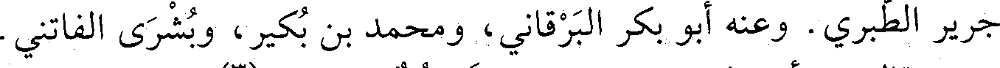
جرير الطبري. وعنه أبو بكر البرقاني، ومحمد بن بكير، وبشرى الفاتني.
File: 000311.gt.txt (if the image is defective, simply delete all Arabic text and the line will be excluded)
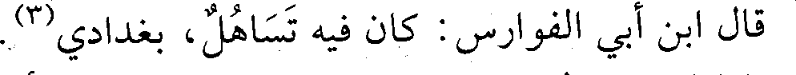
قال ابن أبي الفوارس: كان فيه تساهل، بغدادي(3).
File: 000312.gt.txt (if the image is defective, simply delete all Arabic text and the line will be excluded)

118 - عبدالرحمن بن محمد بن جعفر، أبو بكر الأصبهاني
File: 000313.gt.txt (if the image is defective, simply delete all Arabic text and the line will be excluded)
الكسائي.
File: 000314.gt.txt (if the image is defective, simply delete all Arabic text and the line will be excluded)

سمع أبا بكر بن أبي عاصم(3).
File: 000315.gt.txt (if the image is defective, simply delete all Arabic text and the line will be excluded)
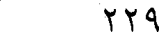
229
File: 000316.gt.txt (if the image is defective, simply delete all Arabic text and the line will be excluded)

وذكر من هذا الجنس كلاما طويلا.
File: 000317.gt.txt (if the image is defective, simply delete all Arabic text and the line will be excluded)

وفيها قلد أبو محمد عبدالواحد بن الفضل بن عبدالملك الهاشمي
File: 000318.gt.txt (if the image is defective, simply delete all Arabic text and the line will be excluded)

نقابة العباسيين، وعزل أبو تمام الزينبي.
File: 000319.gt.txt (if the image is defective, simply delete all Arabic text and the line will be excluded)

وفيها ظهر ما كان المطيع لله يستره من مرضه وتعذر الحركة عليه
File: 000320.gt.txt (if the image is defective, simply delete all Arabic text and the line will be excluded)

وثقل لسانه بالفالج، فدعاه حاجب عز الدولة الحاجب سبكتكين، إلى
File: 000321.gt.txt (if the image is defective, simply delete all Arabic text and the line will be excluded)

خلع نفسه، وتسليم الأمر إلى ولده الطايع لله، ففعل ذلك، وعقد له الأمر في
File: 000322.gt.txt (if the image is defective, simply delete all Arabic text and the line will be excluded)

يوم الأربعاء ثالث عشر ذي القعدة، فكانت مدة خلافة المطيع تسعا وعشرين
File: 000323.gt.txt (if the image is defective, simply delete all Arabic text and the line will be excluded)

سنة وأربعة أشهر وأربعة وعشرين يوما. وأثبت خلعه على القاضي أبي
File: 000324.gt.txt (if the image is defective, simply delete all Arabic text and the line will be excluded)
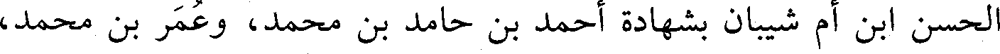
الحسن ابن أم شيبان بشهادة أحمد بن حامد بن محمد، وعمر بن محمد،
File: 000325.gt.txt (if the image is defective, simply delete all Arabic text and the line will be excluded)

وطلحة بن محمد بن جعفر الشاهد.
File: 000326.gt.txt (if the image is defective, simply delete all Arabic text and the line will be excluded)
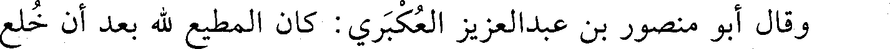
وقال أبو منصور بن عبدالعزيز العكبري: كان المطيع لله بعد أن خلع
File: 000327.gt.txt (if the image is defective, simply delete all Arabic text and the line will be excluded)

يسمى الشيخ الفاضل.
File: 000328.gt.txt (if the image is defective, simply delete all Arabic text and the line will be excluded)

قلت: وكان هو وابنه مستضعفين مع بني بويه، ولم يزل أمر الخلفاء
File: 000329.gt.txt (if the image is defective, simply delete all Arabic text and the line will be excluded)

في ضعف إلى أن استخلف المقتفي لله فانصلح أمر الخلافة قليلا. وكان
File: 000330.gt.txt (if the image is defective, simply delete all Arabic text and the line will be excluded)

دست الخلافة لبني عبيد الرافضة بمصر أميز، وكلمتهم أنفذ، ومملكتهم
File: 000331.gt.txt (if the image is defective, simply delete all Arabic text and the line will be excluded)

تناطح مملكة العباسيين في وقتهم، فالحمد لله على انقطاع دعوتهم.
File: 000332.gt.txt (if the image is defective, simply delete all Arabic text and the line will be excluded)

وفيها بلغ ركب العراق سميراء فرأوا هلال ذي الحجة، وعرفوا أن لا
File: 000333.gt.txt (if the image is defective, simply delete all Arabic text and the line will be excluded)

ماء في الطريق بين فيد إلى مكة إلا ما لا يكفيهم، فعدلوا مساكين إلى بطن
File: 000334.gt.txt (if the image is defective, simply delete all Arabic text and the line will be excluded)
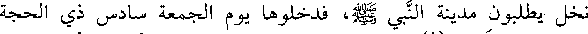
نخل يطلبون مدينة النبي صعلم، فدخلوها يوم الجمعة سادس ذي الحجة
File: 000335.gt.txt (if the image is defective, simply delete all Arabic text and the line will be excluded)

مجهودين، فعرفوا (1) في مسجد رسول الله صعلم، وكان أميرهم أبو منصور
File: 000336.gt.txt (if the image is defective, simply delete all Arabic text and the line will be excluded)

محمد بن عمر بن يحيى العلوي، وقدم الركب الكوفة في أول المحرم من
File: 000337.gt.txt (if the image is defective, simply delete all Arabic text and the line will be excluded)

سنة أربع، فأقاموا بالكوفة أياما لفساد الطريق، ثم جمعوا لمن خفرهم.
File: 000338.gt.txt (if the image is defective, simply delete all Arabic text and the line will be excluded)

وأما مكة والمدينة فأقيمت الخطبة والدعوة بالبلدين لأبي تميم المعز
File: 000339.gt.txt (if the image is defective, simply delete all Arabic text and the line will be excluded)

العبيدي، وقطعت خطبة الطائع لله في هذا العام من الحجاز ومصر والشام
File: 000340.gt.txt (if the image is defective, simply delete all Arabic text and the line will be excluded)

والمغرب، وكان الرفض ظاهرا قائما في هذه الأقاليم، وفي العراق، والسنة
File: 000341.gt.txt (if the image is defective, simply delete all Arabic text and the line will be excluded)

خاملة مغمورة، لكنها ظاهرة بخراسان وأصبهان، فالأمر لله.
File: 000342.gt.txt (if the image is defective, simply delete all Arabic text and the line will be excluded)
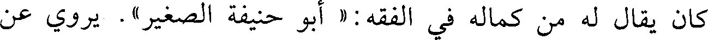
كان يقال له من كماله في الفقه : « أبو حنيفة الصغير » . يروي عن
File: 000343.gt.txt (if the image is defective, simply delete all Arabic text and the line will be excluded)
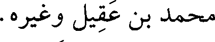
محمد بن عقيل وغيره.
File: 000344.gt.txt (if the image is defective, simply delete all Arabic text and the line will be excluded)

وتوفي ببخارى في ذي الحجة سنة اثنتين وستين. وقد تفقه على أبي
File: 000345.gt.txt (if the image is defective, simply delete all Arabic text and the line will be excluded)

بكر محمد بن أبي سعيد الفقيه. أخذ عنه جماعة.
File: 000346.gt.txt (if the image is defective, simply delete all Arabic text and the line will be excluded)

وكان يعرف بالهندواني من محلة باب هندوان، وعاش اثنتين وستين
File: 000347.gt.txt (if the image is defective, simply delete all Arabic text and the line will be excluded)

سنة، وكان من أعلام أئمة مذهبه.
File: 000348.gt.txt (if the image is defective, simply delete all Arabic text and the line will be excluded)

55 - محمد بن عبدالملك بن محمد بن عدي، أبو بكر
File: 000349.gt.txt (if the image is defective, simply delete all Arabic text and the line will be excluded)

الإستراباذي، أخو نعيم.
File: 000350.gt.txt (if the image is defective, simply delete all Arabic text and the line will be excluded)

نزل جرجان، وكان خبيرا بالشروط فقيها. رحل وسمع من البغوي،
File: 000351.gt.txt (if the image is defective, simply delete all Arabic text and the line will be excluded)

وابن أبي داود(1) .
File: 000352.gt.txt (if the image is defective, simply delete all Arabic text and the line will be excluded)

56- محمد بن محمد بن داود بن سعيد، أبو بكر السجزي ثم
File: 000353.gt.txt (if the image is defective, simply delete all Arabic text and the line will be excluded)

النيسابوري العدل.
File: 000354.gt.txt (if the image is defective, simply delete all Arabic text and the line will be excluded)

سمع بهراة محمد بن معاذ الماليني، وحاتم بن محبوب، وببغداد
File: 000355.gt.txt (if the image is defective, simply delete all Arabic text and the line will be excluded)

البغوي وطبقته، وبنيسابور مؤمل بن الحسن، وأبا عمرو الحيري، وبجرجان
File: 000356.gt.txt (if the image is defective, simply delete all Arabic text and the line will be excluded)

أبا نعيم، وبالري عبدالرحمن بن أبي حاتم.
File: 000357.gt.txt (if the image is defective, simply delete all Arabic text and the line will be excluded)

وروى عنه الحاكم، وقال: كان من خيار التجار الأمناء، ما رأينا منه
File: 000358.gt.txt (if the image is defective, simply delete all Arabic text and the line will be excluded)

إلا ما يليق بأهل الصدق.
File: 000359.gt.txt (if the image is defective, simply delete all Arabic text and the line will be excluded)

57- محمد بن موسى بن فضالة بن إبراهيم بن فضالة بن كثير،
File: 000360.gt.txt (if the image is defective, simply delete all Arabic text and the line will be excluded)

أبو عمر القرشي، مولى عبدالعزيز بن مروان بن الحكم.
File: 000361.gt.txt (if the image is defective, simply delete all Arabic text and the line will be excluded)
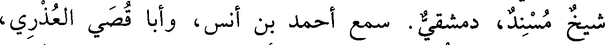
شيخ مسند، دمشقي. سمع أحمد بن أنس، وأبا قصي العذري،
File: 000362.gt.txt (if the image is defective, simply delete all Arabic text and the line will be excluded)

والحسين بن محمد بن جمعة، وحاجب بن أركين، وعبدالرحمن بن القاسم
File: 000363.gt.txt (if the image is defective, simply delete all Arabic text and the line will be excluded)

الرواس، ومحمد بن يزيد بن عبد الصمد، والحسن بن الفرج الغزي،
File: 000364.gt.txt (if the image is defective, simply delete all Arabic text and the line will be excluded)

ومحمد بن محمد ابن النفاخ، وأبا القاسم البغوي لقيه بمكة. وعنه تمام،
File: 000365.gt.txt (if the image is defective, simply delete all Arabic text and the line will be excluded)

وأبو نصر ابن الجندي، وعبدالرحمن بن أبي نصر، ومكي بن الغمر،
File: 000366.gt.txt (if the image is defective, simply delete all Arabic text and the line will be excluded)

ومحمد بن رزق الله، وجماعة آخرهم محمد بن عبد السلام بن سعدان.
File: 000367.gt.txt (if the image is defective, simply delete all Arabic text and the line will be excluded)

توفي في آخرها.
File: 000368.gt.txt (if the image is defective, simply delete all Arabic text and the line will be excluded)
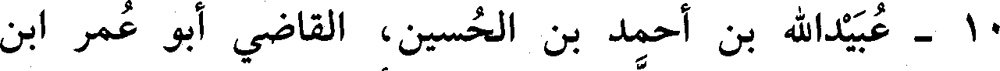
10 - عبيدالله بن أحمد بن الحسين، القاضي أبو عمر ابن
File: 000369.gt.txt (if the image is defective, simply delete all Arabic text and the line will be excluded)

السمسار الفقيه الداوودي الظاهري، تلميذ أبي بكر محمد بن داود
File: 000370.gt.txt (if the image is defective, simply delete all Arabic text and the line will be excluded)

الظاهري.
File: 000371.gt.txt (if the image is defective, simply delete all Arabic text and the line will be excluded)

روى عن محمد، وعن أبيه داود بن علي، وإسماعيل القاضي،
File: 000372.gt.txt (if the image is defective, simply delete all Arabic text and the line will be excluded)
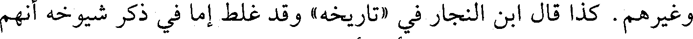
وغيرهم. كذا قال ابن النجار في «تاريخه» وقد غلط إما في ذكر شيوخه أنهم
File: 000373.gt.txt (if the image is defective, simply delete all Arabic text and the line will be excluded)
هؤلاء، وإما في نقل وفاته، والأول أشبه.
File: 000374.gt.txt (if the image is defective, simply delete all Arabic text and the line will be excluded)

قال: روى عنه المحسن بن علي التنوخي في «النشوار» : وعلي بن
File: 000375.gt.txt (if the image is defective, simply delete all Arabic text and the line will be excluded)

نصر الكاتب نزيل مصر، وذكر علي أنه قرأ عليه كل مصنفات أبي بكر بن
File: 000376.gt.txt (if the image is defective, simply delete all Arabic text and the line will be excluded)

داود، وأنه كان إماما كبيرا يتردد إلى الرؤساء.
File: 000377.gt.txt (if the image is defective, simply delete all Arabic text and the line will be excluded)

وقال هلال بن المحسن: توفي فجاءة في رجب.
File: 000378.gt.txt (if the image is defective, simply delete all Arabic text and the line will be excluded)

ثم جزمت بأنه لم يلق داود ولا إسماعيل.
File: 000379.gt.txt (if the image is defective, simply delete all Arabic text and the line will be excluded)

11 - عثمان بن عمر بن خفيف، أبو عمرو المقرىء المعروف
File: 000380.gt.txt (if the image is defective, simply delete all Arabic text and the line will be excluded)

بالدراج.
File: 000381.gt.txt (if the image is defective, simply delete all Arabic text and the line will be excluded)

حدث عن هارون بن علي المزوق، وعلي بن حماد العسكري، وابن
File: 000382.gt.txt (if the image is defective, simply delete all Arabic text and the line will be excluded)

المجدر. وعنه أبو بكر البرقاني، ومحمد بن طلحة النعالي، وجماعة.
File: 000383.gt.txt (if the image is defective, simply delete all Arabic text and the line will be excluded)

وكان ثقة.
File: 000384.gt.txt (if the image is defective, simply delete all Arabic text and the line will be excluded)

قال البرقاني: كان بدلا من الأبدال.
File: 000385.gt.txt (if the image is defective, simply delete all Arabic text and the line will be excluded)

وقال غيره: مات فجاءة في رمضان، رحمة الله عليه (1) .
File: 000386.gt.txt (if the image is defective, simply delete all Arabic text and the line will be excluded)

12 - عثمان بن محمد بن إبراهيم المادرائي، أبو عمرو، نزيل
File: 000387.gt.txt (if the image is defective, simply delete all Arabic text and the line will be excluded)

مصر.
File: 000388.gt.txt (if the image is defective, simply delete all Arabic text and the line will be excluded)

سمع أبا مسلم الكجي. وعنه أبو محمد ابن النحاس (2) .
File: 000389.gt.txt (if the image is defective, simply delete all Arabic text and the line will be excluded)

13 - علي بن أحمد بن فروخ البغدادي الواعظ، ويعرف بغلام.
File: 000390.gt.txt (if the image is defective, simply delete all Arabic text and the line will be excluded)

المصري.
File: 000391.gt.txt (if the image is defective, simply delete all Arabic text and the line will be excluded)

195
File: 000392.gt.txt (if the image is defective, simply delete all Arabic text and the line will be excluded)

ابن أحمد البلخي، ومكحولا البيروتي، وهذه الطبقة. روى عنه علي
File: 000393.gt.txt (if the image is defective, simply delete all Arabic text and the line will be excluded)

بن بشرى، ويحيى بن عمار السجستانيان.
File: 000394.gt.txt (if the image is defective, simply delete all Arabic text and the line will be excluded)

وصنف كتابا كبيرا في مناقب الشافعي.
File: 000395.gt.txt (if the image is defective, simply delete all Arabic text and the line will be excluded)

وآبر : من قرى سجستان. توفي في شهر رجب(1) .
File: 000396.gt.txt (if the image is defective, simply delete all Arabic text and the line will be excluded)

85 - محمد بن سعيد العصفري القرطبي.
File: 000397.gt.txt (if the image is defective, simply delete all Arabic text and the line will be excluded)
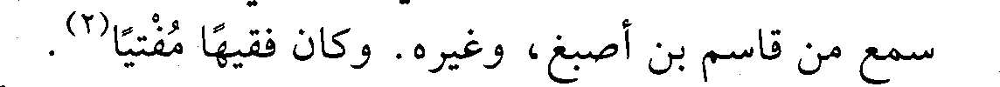
سمع من قاسم بن أصبغ، وغيره. وكان فقيها مفتيا(2) .
File: 000398.gt.txt (if the image is defective, simply delete all Arabic text and the line will be excluded)

86 - محمد بن عبد الله بن محمد بن العباس، أبو الحسين
File: 000399.gt.txt (if the image is defective, simply delete all Arabic text and the line will be excluded)

الشيرازي اللالكائي.
File: 000400.gt.txt (if the image is defective, simply delete all Arabic text and the line will be excluded)
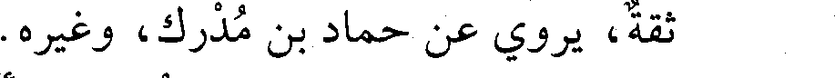
ثقة، يروي عن حماد بن مدرك، وغيره.
File: 000401.gt.txt (if the image is defective, simply delete all Arabic text and the line will be excluded)

87 - محمد بن علي بن حسين، أبو بكر ابن الفأفاء الرازي،
File: 000402.gt.txt (if the image is defective, simply delete all Arabic text and the line will be excluded)

قاضي الدينور.
File: 000403.gt.txt (if the image is defective, simply delete all Arabic text and the line will be excluded)

حدث بهمذان سنة ثلاث وستين بكتاب «الجرح والتعديل» عن ابن
File: 000404.gt.txt (if the image is defective, simply delete all Arabic text and the line will be excluded)

أبي حاتم، وروى عن جماعة. روى عنه الكتاب: أبو طاهر بن سلمة، وابن
File: 000405.gt.txt (if the image is defective, simply delete all Arabic text and the line will be excluded)

فنجويه، وابن تركان، وغيرهم.
File: 000406.gt.txt (if the image is defective, simply delete all Arabic text and the line will be excluded)

88 - محمد بن محمد الفياضي الهروي الإمام.
File: 000407.gt.txt (if the image is defective, simply delete all Arabic text and the line will be excluded)

يروي عن أبي قريش محمد بن جمعة. وعنه يحيى بن عمار
File: 000408.gt.txt (if the image is defective, simply delete all Arabic text and the line will be excluded)

السجستاني.
File: 000409.gt.txt (if the image is defective, simply delete all Arabic text and the line will be excluded)

89 - محمد بن موسى بن الحسين، أبو العباس ابن السمسار
File: 000410.gt.txt (if the image is defective, simply delete all Arabic text and the line will be excluded)

الدمشقي الحافظ، أخو أبي الحسن علي.
File: 000411.gt.txt (if the image is defective, simply delete all Arabic text and the line will be excluded)

سمع أحمد بن عمير بن جوصا، ومحمد بن خريم، وعلي بن محمد
File: 000412.gt.txt (if the image is defective, simply delete all Arabic text and the line will be excluded)

ابن كاس، وأبا الجهم بن طلاب، وأبا الدحداح أحمد بن محمد، وعبدالله
File: 000413.gt.txt (if the image is defective, simply delete all Arabic text and the line will be excluded)

بن محمد بن السري الحمصي الحافظ، وببغداد من المحاملي، ومحمد بن
File: 000414.gt.txt (if the image is defective, simply delete all Arabic text and the line will be excluded)

مخلد. وعنه أخوه أبو الحسن، ومكي بن الغمر، ومحمد بن عوف المزني،
File: 000415.gt.txt (if the image is defective, simply delete all Arabic text and the line will be excluded)

وجماعة.
File: 000438.gt.txt (if the image is defective, simply delete all Arabic text and the line will be excluded)

خليفة، وعبدان، وعبدالله بن ناجية، وعبدالله بن سلم المقدسي، وابن قتيبة
File: 000439.gt.txt (if the image is defective, simply delete all Arabic text and the line will be excluded)

العسقلاني. ودرس الفقه بمصر على منصور بن إسماعيل الفقيه.
File: 000440.gt.txt (if the image is defective, simply delete all Arabic text and the line will be excluded)

روي عنه أبو سعد عبدالرحمن الإدريسي، وقال: أنا توليت الصلاة
File: 000441.gt.txt (if the image is defective, simply delete all Arabic text and the line will be excluded)

عليه(1) .
File: 000442.gt.txt (if the image is defective, simply delete all Arabic text and the line will be excluded)

44 - محمد بن أحمد بن خالد بن يزيد القرطبي، أبو بكر، ابن
File: 000443.gt.txt (if the image is defective, simply delete all Arabic text and the line will be excluded)

الخفاف مصنف كتاب «فضل العلم» .
File: 000444.gt.txt (if the image is defective, simply delete all Arabic text and the line will be excluded)

له رواية عن أبيه وغيره(2) .
File: 000445.gt.txt (if the image is defective, simply delete all Arabic text and the line will be excluded)

45 - محمد بن أحمد بن علي بن شاهويه، أبو بكر الفارسي
File: 000446.gt.txt (if the image is defective, simply delete all Arabic text and the line will be excluded)

الفقيه الشافعي، قاضي بلاد فارس.
File: 000447.gt.txt (if the image is defective, simply delete all Arabic text and the line will be excluded)

بعيدة تفرد بها.
File: 000448.gt.txt (if the image is defective, simply delete all Arabic text and the line will be excluded)

وزكريا الساجي. وعنه الحاكم(3) .
File: 000449.gt.txt (if the image is defective, simply delete all Arabic text and the line will be excluded)

46 - محمد بن أحمد بن كثير بن ديسم، أبو سعيد الهروي.
File: 000450.gt.txt (if the image is defective, simply delete all Arabic text and the line will be excluded)

سمع أحمد بن مقدام الهروي، وهو آخر من حدث في الدنيا عنه،
File: 000451.gt.txt (if the image is defective, simply delete all Arabic text and the line will be excluded)

وعاش بعده اثنتين وتسعين سنة، ولعله ممن جاوز المئة. روى عنه ابن
File: 000452.gt.txt (if the image is defective, simply delete all Arabic text and the line will be excluded)

العالي، وغيره، وتوفي في جمادى الآخرة.
File: 000453.gt.txt (if the image is defective, simply delete all Arabic text and the line will be excluded)

قرأت على أبي الحسن الهاشمي : أخبركم أبو الحسن بن روزبه،
File: 000454.gt.txt (if the image is defective, simply delete all Arabic text and the line will be excluded)

قال : أخبرنا أبو الوقت، قال : أخبرنا شيخ الإسلام أبو إسماعيل، قال:
File: 000455.gt.txt (if the image is defective, simply delete all Arabic text and the line will be excluded)

أخبرنا أحمد بن محمد بن منصور ببوشنج، قال : أخبرنا أبو سعيد محمد بن
File: 000456.gt.txt (if the image is defective, simply delete all Arabic text and the line will be excluded)

أحمد بن كثير بهراة، قال : حدثنا أبو جعفر أحمد بن مقدام الهروي، قال:
File: 000457.gt.txt (if the image is defective, simply delete all Arabic text and the line will be excluded)

حدثنا أبو نعيم، قال : حدثنا سلمة بن وردان، قال : سمعت أنس بن مالك
File: 000458.gt.txt (if the image is defective, simply delete all Arabic text and the line will be excluded)

عن رسول الله صعلم، قال : « من ترك الكذب وهو باطل بني له في رياض
File: 000459.gt.txt (if the image is defective, simply delete all Arabic text and the line will be excluded)

الجنة. ومن ترك المراء وهو محق بني له في وسطها. ومن حسن خلقه بني
File: 000460.gt.txt (if the image is defective, simply delete all Arabic text and the line will be excluded)

له في أعلاها»(1) .
File: 000461.gt.txt (if the image is defective, simply delete all Arabic text and the line will be excluded)

قال شيخ الإسلام في كتاب «ذم الكلام»: هذا الحديث أعلى حديث
File: 000462.gt.txt (if the image is defective, simply delete all Arabic text and the line will be excluded)

عندي(2) .
File: 000463.gt.txt (if the image is defective, simply delete all Arabic text and the line will be excluded)

47 - محمد بن أحمد بن محمد بن طالب بن أيمن، أبو عبدالله
File: 000464.gt.txt (if the image is defective, simply delete all Arabic text and the line will be excluded)

القيسي المؤدب القبري.
File: 000465.gt.txt (if the image is defective, simply delete all Arabic text and the line will be excluded)

رحل وسمع بمصر من أبي قتيبة بن الفضل، وأبي محمد بن الورد،
File: 000466.gt.txt (if the image is defective, simply delete all Arabic text and the line will be excluded)

والعباس الرافقي. وسمع الناس منه كثيرا. وقبرة: مدينة صغيرة بالأندلس (3) .
File: 000467.gt.txt (if the image is defective, simply delete all Arabic text and the line will be excluded)

48 - محمد بن أحمد بن منبه السمسار، أبو أحمد النيسابوري.
File: 000468.gt.txt (if the image is defective, simply delete all Arabic text and the line will be excluded)

روى عن مطين. وعنه الحاكم وغيره.
File: 000469.gt.txt (if the image is defective, simply delete all Arabic text and the line will be excluded)

49 - محمد بن إبراهيم بن حسنويه، أبو بكر النيسابوري الوراق
File: 000470.gt.txt (if the image is defective, simply delete all Arabic text and the line will be excluded)

الزاهد العابد.
File: 000471.gt.txt (if the image is defective, simply delete all Arabic text and the line will be excluded)

سمع محمد بن إبراهيم البوشنجي، وجعفر بن سوار. وعنه الحاكم،
File: 000472.gt.txt (if the image is defective, simply delete all Arabic text and the line will be excluded)

وقال : عاش خمسا وتسعين سنة، وبكى من خشية الله حتى عمي.
File: 000473.gt.txt (if the image is defective, simply delete all Arabic text and the line will be excluded)

50 - محمد بن إبراهيم بن إسحاق بن أبروية، أبو أحمد
File: 000474.gt.txt (if the image is defective, simply delete all Arabic text and the line will be excluded)

الإستراباذي.
File: 000475.gt.txt (if the image is defective, simply delete all Arabic text and the line will be excluded)

فاضل ثقة عابد، سمع الكثير ورحل، وحدث عن محمد بن عبد بن
File: 000476.gt.txt (if the image is defective, simply delete all Arabic text and the line will be excluded)

عامر السمرقندي، ومحمد بن يزداد، والضحاك بن الحسين، وأحمد بن
File: 000477.gt.txt (if the image is defective, simply delete all Arabic text and the line will be excluded)

حفص السعدي، وجاوز التسعين.
File: 000478.gt.txt (if the image is defective, simply delete all Arabic text and the line will be excluded)

روى عنه أبو سعد الإدريسي، وقال : توفي فجاءة.
File: 000479.gt.txt (if the image is defective, simply delete all Arabic text and the line will be excluded)

51 - محمد بن الحسن بن كوثر، أبو بحر البربهاري.
File: 000480.gt.txt (if the image is defective, simply delete all Arabic text and the line will be excluded)

بغدادي معمر، حدث عن محمد بن الفرج الأزرق، ومحمد بن يونس
File: 000481.gt.txt (if the image is defective, simply delete all Arabic text and the line will be excluded)

في مذهب مالك» ، وكتاب «الفتيا» وكتاب «تاريخ الأندلس» ، و«تاريخ
File: 000482.gt.txt (if the image is defective, simply delete all Arabic text and the line will be excluded)

الإفريقيين»، وكتاب «النسب» .
File: 000483.gt.txt (if the image is defective, simply delete all Arabic text and the line will be excluded)

قال ابن الفرضي (1) : بلغني أنه صنف للحكم مئة ديوان، وكان شاعرا
File: 000484.gt.txt (if the image is defective, simply delete all Arabic text and the line will be excluded)

بليغا لكنه يلحن، وكان يتعانى الكيمياء، واحتاج بعد موت الحكم إلى أن
File: 000485.gt.txt (if the image is defective, simply delete all Arabic text and the line will be excluded)

جلس في حانوت يبيع الأدهان. روى عنه أبو بكر بن حوئيل، وغيره.
File: 000486.gt.txt (if the image is defective, simply delete all Arabic text and the line will be excluded)

وتوفي في صفر (2) .
File: 000487.gt.txt (if the image is defective, simply delete all Arabic text and the line will be excluded)

18 - محمد بن الحسن بن سعيد، أبو العباس ابن الخشاب
File: 000488.gt.txt (if the image is defective, simply delete all Arabic text and the line will be excluded)

المخرمي الصوفي الزاهد.
File: 000489.gt.txt (if the image is defective, simply delete all Arabic text and the line will be excluded)

صاحب حكايات عن الشبلي وغيره . وعنه السلمي، والحاكم(3) .
File: 000490.gt.txt (if the image is defective, simply delete all Arabic text and the line will be excluded)

19 - محمد بن الحسين بن محمد بن الحسين، الوزير ظهير الدين
File: 000491.gt.txt (if the image is defective, simply delete all Arabic text and the line will be excluded)

أبو شجاع، حفيد الوزير أبي شجاع الروذراوري البغدادي.
File: 000492.gt.txt (if the image is defective, simply delete all Arabic text and the line will be excluded)

وزر للمسترشد ثم عزل ولزم بيته دهرا في نعمة وعافية.
File: 000493.gt.txt (if the image is defective, simply delete all Arabic text and the line will be excluded)

مات في ذي القعدة، وقد شاخ.
File: 000494.gt.txt (if the image is defective, simply delete all Arabic text and the line will be excluded)

20 - محمد بن حميد بن سهل المخرمي، أبو بكر.
File: 000495.gt.txt (if the image is defective, simply delete all Arabic text and the line will be excluded)

سمع أبا خليفة، وجعفرا الفريابي، والهيثم بن خلف الدوري،
File: 000496.gt.txt (if the image is defective, simply delete all Arabic text and the line will be excluded)

وغيرهم. وعنه الدارقطني، وأبو نعيم، وجماعة.
File: 000497.gt.txt (if the image is defective, simply delete all Arabic text and the line will be excluded)

قال البرقاني: ضعيف.
File: 000498.gt.txt (if the image is defective, simply delete all Arabic text and the line will be excluded)

وقال ابن أبي الفوارس: فيه تساهل شديد(4) .
File: 000499.gt.txt (if the image is defective, simply delete all Arabic text and the line will be excluded)

21 - محمد بن عمر بن محمد بن الفضل، أبو عبدالله الجعفي
File: 000500.gt.txt (if the image is defective, simply delete all Arabic text and the line will be excluded)

البغدادي.
File: 000501.gt.txt (if the image is defective, simply delete all Arabic text and the line will be excluded)

سمع أبا شعيب الحراني، وموسى بن هارون، وأبا العباس بن
File: 000502.gt.txt (if the image is defective, simply delete all Arabic text and the line will be excluded)

مسروق. وعنه ابن رزقويه، وأبو نعيم.
File: 000503.gt.txt (if the image is defective, simply delete all Arabic text and the line will be excluded)

197
File: 000504.gt.txt (if the image is defective, simply delete all Arabic text and the line will be excluded)

سنة ست وستين وثلاث مئة
File: 000505.gt.txt (if the image is defective, simply delete all Arabic text and the line will be excluded)

في جمادى الأولى زفت بنت عز الدولة إلى الطائع لله(1) .
File: 000506.gt.txt (if the image is defective, simply delete all Arabic text and the line will be excluded)

وفيها جاء أبو بكر محمد بن علي بن شاهويه صاحب القرامطة، ومعه
File: 000507.gt.txt (if the image is defective, simply delete all Arabic text and the line will be excluded)

ألف رجل منهم إلى الكوفة، وأقام الدعوة بها لعضد الدولة، وأسقط خطبة
File: 000508.gt.txt (if the image is defective, simply delete all Arabic text and the line will be excluded)

عز الدولة، وكان قدومه معونة من القرامطة لعضد الدولة.
File: 000509.gt.txt (if the image is defective, simply delete all Arabic text and the line will be excluded)

وفيها كانت وقعة بين عز الدولة وعضد الدولة، أسر فيها غلام تركي
File: 000510.gt.txt (if the image is defective, simply delete all Arabic text and the line will be excluded)

لعز الدولة، فجن عليه واشتد حزنه، وتسلى عن كل شيء إلا عنه، وامتنع
File: 000511.gt.txt (if the image is defective, simply delete all Arabic text and the line will be excluded)

من الأكل، وأخذ في البكاء، واحتجب عن الناس، وحرم على نفسه
File: 000512.gt.txt (if the image is defective, simply delete all Arabic text and the line will be excluded)

الجلوس في الدست، وكتب إلى عضد الدولة يسأله رد الغلام إليه،
File: 000513.gt.txt (if the image is defective, simply delete all Arabic text and the line will be excluded)

ويتذلل، فصار ضحكة بين الناس، وعوتب فما ارعوى، وبذل في فداء
File: 000514.gt.txt (if the image is defective, simply delete all Arabic text and the line will be excluded)

الغلام جاريتين عوديتين، كان قد بذل له في الواحدة مئة ألف، فأبي أن
File: 000515.gt.txt (if the image is defective, simply delete all Arabic text and the line will be excluded)

يبيعها، وقال للرسول: إن توقف عليك في رده فزد ما رأيت ولا تفكر فقد
File: 000516.gt.txt (if the image is defective, simply delete all Arabic text and the line will be excluded)

رضيت أن آخذه واذهب إلى أقصى الأرض، فرده عضد الدولة عليه.
File: 000517.gt.txt (if the image is defective, simply delete all Arabic text and the line will be excluded)

وحج بالناس من العراق أبو عبدالله أحمد بن أبي الحسين العلوي،
File: 000518.gt.txt (if the image is defective, simply delete all Arabic text and the line will be excluded)

وحجت جميلة بنت ناصر الدولة ابن حمدان ومعها أخواها إبراهيم وهبةالله،
File: 000519.gt.txt (if the image is defective, simply delete all Arabic text and the line will be excluded)

فضرب بحجتها المثل، فإنها استصحبت أربع مئة جمل، وكان معها عدة
File: 000520.gt.txt (if the image is defective, simply delete all Arabic text and the line will be excluded)

محامل لم يعلم في أيها كانت، وكست المجاورين، ونثرت على الكعبة لما
File: 000521.gt.txt (if the image is defective, simply delete all Arabic text and the line will be excluded)

رأتها عشر آلاف دينار، وسقت جميع أهل الموسم السويق بالسكر والثلج -
File: 000522.gt.txt (if the image is defective, simply delete all Arabic text and the line will be excluded)

كذا قال أبو منصور الثعالبي، فمن أين لها ثلج؟ - وقتل أخوها هبة الله في
File: 000523.gt.txt (if the image is defective, simply delete all Arabic text and the line will be excluded)

الطريق، وأعتقت ثلاث مئة عبد ومئتي جارية، وأغنت المجاورين
File: 000524.gt.txt (if the image is defective, simply delete all Arabic text and the line will be excluded)

بالأموال.
File: 000525.gt.txt (if the image is defective, simply delete all Arabic text and the line will be excluded)

قال أبو منصور الثعالبي: خلعت على طبقات الناس خمسين ألف
File: 000526.gt.txt (if the image is defective, simply delete all Arabic text and the line will be excluded)

ثوب، وكان معها أربع مئة عمارية لا يدرى في أيها كانت، ثم ضرب الدهر
File: 000527.gt.txt (if the image is defective, simply delete all Arabic text and the line will be excluded)

ضربانه، واستولى عضد الدولة على أموالها وحصونها وممالك أهل بيتها
File: 000528.gt.txt (if the image is defective, simply delete all Arabic text and the line will be excluded)

ومسح النبي صعلم صدري، فزال عني الألم، وانتبهت ببرد ريق أبي بكر،
File: 000529.gt.txt (if the image is defective, simply delete all Arabic text and the line will be excluded)

فناديت، فقام إلي رجل، فأخبرته، فأسخن لي ماء، فتوضأت به، وجاءني
File: 000530.gt.txt (if the image is defective, simply delete all Arabic text and the line will be excluded)

بثياب ونفقة وقال: هذا فتوح، فقمت فقال: أين تمر الله الله، فجئت
File: 000531.gt.txt (if the image is defective, simply delete all Arabic text and the line will be excluded)

المأذنة وأذنت الصبح: « الصلاة خير من النوم » ، ثم قلت قصيدة في
File: 000532.gt.txt (if the image is defective, simply delete all Arabic text and the line will be excluded)

الصحابة، فأخذت إلى الوالي فقال: يا هذا، اذهب ولا تقم ببلدي، فإني
File: 000533.gt.txt (if the image is defective, simply delete all Arabic text and the line will be excluded)

أخاف من أصحاب الأخبار وأدخل فيك جهنم، فخرجت وأتيت عمان،
File: 000534.gt.txt (if the image is defective, simply delete all Arabic text and the line will be excluded)

فاكتريت مع عرب إلى الكوفة، فأتيت واسط، فوجدت بنتي تبكي علي،
File: 000535.gt.txt (if the image is defective, simply delete all Arabic text and the line will be excluded)

وأنا كل سنة أحج وأسأل عن القدس لعل تزول دولتهم، فرأيته طلق اللسان
File: 000536.gt.txt (if the image is defective, simply delete all Arabic text and the line will be excluded)

ألثغ.
File: 000537.gt.txt (if the image is defective, simply delete all Arabic text and the line will be excluded)

وفي المحرم ولي إمرة دمشق بدر الشمولي الكافوري، ولي نحوا من
File: 000538.gt.txt (if the image is defective, simply delete all Arabic text and the line will be excluded)

شهرين من قبل أبي محمود الكتامي نائب الشام للمعز، ثم عزل بأبي الثريا
File: 000539.gt.txt (if the image is defective, simply delete all Arabic text and the line will be excluded)

الكردي، ثم ولي دمشق ريان الخادم المعزي، ثم عزل أيضا بعد أيام
File: 000540.gt.txt (if the image is defective, simply delete all Arabic text and the line will be excluded)

بسبكتكين التركي.
File: 000541.gt.txt (if the image is defective, simply delete all Arabic text and the line will be excluded)

سنة خمس وستين وثلاث مئة
File: 000542.gt.txt (if the image is defective, simply delete all Arabic text and the line will be excluded)

فيها كتب ركن الدولة أبو علي بن بويه إلى ولده عضد الدولة أبي
File: 000543.gt.txt (if the image is defective, simply delete all Arabic text and the line will be excluded)

شجاع أنه قد كبرت سنه وأنه يؤثر مشاهدته، فاجتمعا، فقسم ركن الدولة
File: 000544.gt.txt (if the image is defective, simply delete all Arabic text and the line will be excluded)

الممالك بين أولاده فجعل لعضد الدولة فارس وكرمان، ولمؤيد الدولة
File: 000545.gt.txt (if the image is defective, simply delete all Arabic text and the line will be excluded)

الري وأصبهان، ولفخر الدولة همذان والدينور، وجعل ولده أبا العباس في
File: 000546.gt.txt (if the image is defective, simply delete all Arabic text and the line will be excluded)

كنف عضد الدولة.
File: 000547.gt.txt (if the image is defective, simply delete all Arabic text and the line will be excluded)

وفي رجب عمل مجلس الحكم في دار السلطان عز الدولة، وجلس
File: 000548.gt.txt (if the image is defective, simply delete all Arabic text and the line will be excluded)

ابن معروف وحكم، لأن عز الدولة التمس ذلك ليشاهد مجلس حكمه كيف
File: 000549.gt.txt (if the image is defective, simply delete all Arabic text and the line will be excluded)

وفيها وفي التي تليها كانت الحرب تستعر بين هفتكين وبين جوهر
File: 000550.gt.txt (if the image is defective, simply delete all Arabic text and the line will be excluded)

المعزي بأعمال دمشق، وعدة الوقائع بينهما اثنتا عشرة وقعة، منها وقعة
File: 000551.gt.txt (if the image is defective, simply delete all Arabic text and the line will be excluded)

الشاغور التي كاد يتلف فيها جوهر، ثم كان بينهما عدة وقعات بعد ذلك.
File: 000552.gt.txt (if the image is defective, simply delete all Arabic text and the line will be excluded)

186
File: 000553.gt.txt (if the image is defective, simply delete all Arabic text and the line will be excluded)

قلت: روى عنه الحاكم، وأبو الحسن بن رزقويه، وأبو الفتح بن أبي
File: 000554.gt.txt (if the image is defective, simply delete all Arabic text and the line will be excluded)

الفوارس، وأبو بكر البرقاني، وأبو علي بن شاذان، وأبو نعيم، وآخر من
File: 000555.gt.txt (if the image is defective, simply delete all Arabic text and the line will be excluded)

روى عنه أبو طالب بن غيلان.
File: 000556.gt.txt (if the image is defective, simply delete all Arabic text and the line will be excluded)

قال الخطيب(1) : كان ثقة ثبتا مكثرا مواصلا للحج، انتخب عليه
File: 000557.gt.txt (if the image is defective, simply delete all Arabic text and the line will be excluded)

الدارقطني، وكتب الناس عنه علما كثيرا مثل «تاريخ السراج» وغير
File: 000558.gt.txt (if the image is defective, simply delete all Arabic text and the line will be excluded)

ذلك، و«تاريخ البخاري» وعدة كتب لمسلم. وكان عند البرقاني عنه سقط
File: 000559.gt.txt (if the image is defective, simply delete all Arabic text and the line will be excluded)

أجزاء وكتب، لكن ما روي عنه في «صحيحه» ، قال: في نفسي منه لكثرة ما
File: 000560.gt.txt (if the image is defective, simply delete all Arabic text and the line will be excluded)

يغرب. ثم إنه قواه، وقال: عندي عنه أحاديث عالية كنت أخرجتها نازلة،
File: 000561.gt.txt (if the image is defective, simply delete all Arabic text and the line will be excluded)

إلا أني لا أقدر على إخراجها لكبر السن.
File: 000562.gt.txt (if the image is defective, simply delete all Arabic text and the line will be excluded)

قال الخطيب(2) : وحدثنا الحسين بن شيطا، قال: سمعت أبا إسحاق
File: 000563.gt.txt (if the image is defective, simply delete all Arabic text and the line will be excluded)

المزكي يقول: أنفقت على الحديث بدرا من الدنانير، وقدمت بغداد سنة
File: 000564.gt.txt (if the image is defective, simply delete all Arabic text and the line will be excluded)

ست عشرة ومعي بخمسين ألف درهم بضاعة، ورجعت إلى نيسابور ومعي
File: 000565.gt.txt (if the image is defective, simply delete all Arabic text and the line will be excluded)

أقل من ثلثها، أنفقت ما ذهب على أهل الحديث.
File: 000566.gt.txt (if the image is defective, simply delete all Arabic text and the line will be excluded)

توفي في شعبان، وقد خرج من بغداد، فنقل إلى نيسابور، وعاش
File: 000567.gt.txt (if the image is defective, simply delete all Arabic text and the line will be excluded)

سبعا وستين سنة. وهو والد علي، ويحيى، ومحمد، وعبد الرحمن، وقد
File: 000568.gt.txt (if the image is defective, simply delete all Arabic text and the line will be excluded)

رووا الحديث.
File: 000569.gt.txt (if the image is defective, simply delete all Arabic text and the line will be excluded)

34 - إسماعيل بن عبدالله بن محمد بن ميكال، الأديب أبو
File: 000570.gt.txt (if the image is defective, simply delete all Arabic text and the line will be excluded)

العباس شيخ خراسان ووجهها وعينها، من ولد يزدجرد بن بهرام جور
File: 000571.gt.txt (if the image is defective, simply delete all Arabic text and the line will be excluded)

ملك الفرس.
File: 000572.gt.txt (if the image is defective, simply delete all Arabic text and the line will be excluded)

استعمل المقتدر أباه على الأهواز، فاستدعى أبا بكر بن دريد لتأديب
File: 000573.gt.txt (if the image is defective, simply delete all Arabic text and the line will be excluded)

إسماعيل.
File: 000574.gt.txt (if the image is defective, simply delete all Arabic text and the line will be excluded)

وفيه وفي أبيه يقول ابن دريد مقصورته التي يقول فيها:
File: 000575.gt.txt (if the image is defective, simply delete all Arabic text and the line will be excluded)

إن ابـن ميكـال الأميـر انتـاشنـي من بعد ما قد كنت كالشيء اللقى
File: 000576.gt.txt (if the image is defective, simply delete all Arabic text and the line will be excluded)

ومـد ضبعـي أبـو العبـاس مـن بعد انقباض الذرع والباع الوزى
File: 000577.gt.txt (if the image is defective, simply delete all Arabic text and the line will be excluded)

201
File: 000578.gt.txt (if the image is defective, simply delete all Arabic text and the line will be excluded)

119 - عبدالرحمن بن محمد بن إدريس بن كامل، أبو محمد
File: 000579.gt.txt (if the image is defective, simply delete all Arabic text and the line will be excluded)

القهندزي.
File: 000580.gt.txt (if the image is defective, simply delete all Arabic text and the line will be excluded)

شيخ كبير، سمع عثمان بن سعيد الدارمي، وأبا مسلم الكجي،
File: 000581.gt.txt (if the image is defective, simply delete all Arabic text and the line will be excluded)

ويوسف القاضي. وعنه أبو أحمد المعلم، وأبو منصور الديباجي، وأهل